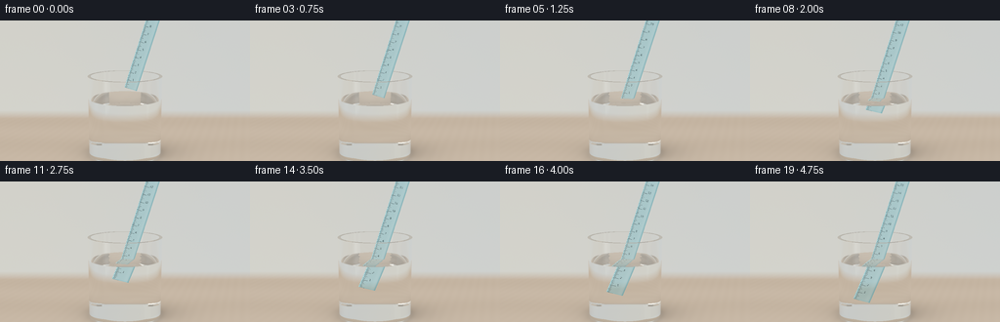
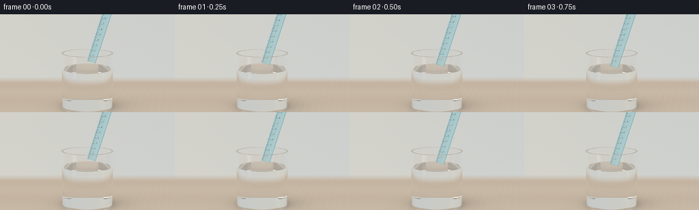

CODING AGENTS AS PIXEL WORLD MODELS
traex/GPT-6.1-Sol · phygen_075
点击播放 · 原生 RGB 像素
逐轮保存的候选
回放视频、检查图与代码变化。
每份候选均可单独播放。实际图片检查记录在下方工具轨迹中。
候选 01播放与检查图
点击播放 · 原生 RGB 像素


展开代码变化
--- 上一保存版本
+++ 本次保存版本
@@ -0,0 +1,238 @@
+"""Procedural RGB rendering of a ruler being immersed in a water-filled tumbler.
+Only numpy/Pillow and analytic geometry are used; no rendering engine or assets.
+"""
+from pathlib import Path
+import json
+import numpy as np
+from PIL import Image, ImageDraw, ImageFont
+from artifact_io import save
+
+ROOT = Path(__file__).resolve().parent
+SPEC = json.loads((ROOT/'task_spec.json').read_text())
+W,H = SPEC['width'],SPEC['height']
+SS=3
+RW,RH=W*SS,H*SS
+R_OUT,R_IN=1.245,1.145
+TOP,BOTTOM,WATER=2.66,.135,1.91
+CAM=np.array([0.,4.6,12.])
+TARGET=np.array([0.,2.15,0.])
+FORWARD=(TARGET-CAM);FORWARD/=np.linalg.norm(FORWARD)
+RIGHT=np.cross(FORWARD,[0.,1.,0.]);RIGHT/=np.linalg.norm(RIGHT)
+UP=np.cross(RIGHT,FORWARD)
+F=1/np.tan(np.deg2rad(38)/2)
+xx,yy=np.meshgrid((np.arange(RW)+.5)/RW*2-1,1-(np.arange(RH)+.5)/RH*2)
+RAYS=(FORWARD+xx[...,None]/F*RIGHT+yy[...,None]/F*(H/W)*UP).reshape(-1,3)
+RAYS/=np.linalg.norm(RAYS,axis=1,keepdims=True)
+AXIS=np.array([.30,np.sqrt(1-.30**2),0.])
+SIDE=np.array([AXIS[1],-AXIS[0],0.])
+WIDTH,LENGTH=.43,4.75
+# A high-resolution printed ruler texture. Numbers remain physically attached
+# to the ruler and are distorted by the refracting ray, not overlaid on screen.
+TW,TH=400,4400
+tex=Image.new('RGBA',(TW,TH),(0,0,0,0));td=ImageDraw.Draw(tex)
+font=ImageFont.truetype('/usr/share/fonts/truetype/dejavu/DejaVuSans.ttf',77)
+unit=.265
+for k in range(181):
+ s=k*unit/10
+ if s>LENGTH: break
+ y=round((LENGTH-s)/LENGTH*(TH-1))
+ tick=.37 if k%10==0 else (.255 if k%5==0 else .17)
+ td.line([(8,y),(int(TW*tick),y)],fill=(6,37,43,242),width=7 if k%10==0 else 4)
+ if k%10==0 and k>0:
+ td.text((165,y-90),str(k//10),font=font,fill=(8,43,49,245))
+# Subtle edge rules printed along the molded plastic.
+td.line([(TW-22,0),(TW-22,TH)],fill=(26,125,137,62),width=3)
+TEXTURE=np.asarray(tex).astype(np.float32)/255
+
+
+def environment(o,d):
+ """Soft studio light, a warm tabletop, and defocused neutral backdrop."""
+ n=len(d)
+ dy=d[:,1]
+ t=(-.045-o[:,1])/np.where(abs(dy)>1e-8,dy,1e-8)
+ p=o+d*np.maximum(t,0)[:,None]
+ # Soft tonal variations in an unadorned wall.
+ wall=np.broadcast_to([.615,.637,.630],(n,3)).copy()
+ warmth=np.exp(-((d[:,0]+.35)/.52)**2)
+ wall+=warmth[:,None]*np.array([.045,.019,-.023])
+ wall*= (1-.08*np.clip(d[:,1]+.2,-.5,.7))[:,None]
+ table=np.broadcast_to([.57,.475,.375],(n,3)).copy()
+ table+=(.012*np.sin(p[:,2]*2.1)+.004*np.sin(p[:,0]*18+p[:,2]*6))[:,None]
+ # Contact shadow and softly focused glass caustics.
+ rad=np.sqrt(p[:,0]**2+p[:,2]**2)
+ shadow=.36*np.exp(-((p[:,0]-.30)/1.48)**2-((p[:,2]+.10)/.95)**2)
+ contact=.33*np.exp(-((rad-.91)/.38)**2)
+ table*=np.clip(1-shadow-contact,.38,1)[:,None]
+ caustic=np.exp(-((rad-1.19)/.07)**2)*.060
+ caustic+=.028*np.exp(-((p[:,0]-.9)/.50)**2-((p[:,2]-.65)/.17)**2)
+ table+=caustic[:,None]*np.array([.85,1.05,1.1])
+ blend=np.clip((p[:,2]+5.8)/1.5,0,1)*(t>0)*(dy<0)
+ color=wall*(1-blend[:,None])+table*blend[:,None]
+ # Tall area lightboxes create coherent vertical reflected highlights.
+ for xpos,zpos,halfwidth,power in [(-4.4,4.0,1.05,1.1),(4.2,2.1,.42,.85)]:
+ tx=(xpos-o[:,0])/np.where(abs(d[:,0])>1e-8,d[:,0],1e-8)
+ q=o+d*tx[:,None]
+ vertical=np.clip((q[:,1]-.25)/.30,0,1)*np.clip((6.5-q[:,1])/.4,0,1)
+ rect=np.clip((halfwidth-abs(q[:,2]-zpos))/.18,0,1)*vertical*(tx>0)
+ color=color*(1-rect[:,None])+np.array([1.0,.98,.93])*power*rect[:,None]
+ return np.maximum(color,0)
+
+
+def medium(p):
+ r2=p[:,0]**2+p[:,2]**2
+ glass=(r2<R_OUT**2)&(p[:,1]>0)&(p[:,1]<TOP)&((r2>R_IN**2)|(p[:,1]<BOTTOM))
+ water=(r2<R_IN**2)&(p[:,1]>BOTTOM)&(p[:,1]<WATER)
+ return np.where(glass,1,np.where(water,2,0))
+
+
+def intersections(o,d,bottom):
+ n=len(o)
+ best=np.full(n,1e10)
+ normal=np.zeros((n,3))
+ hit=np.zeros(n,dtype=np.int8)
+ def update(t,valid,norm,kind):
+ mask=valid&(t>2e-5)&(t<best)
+ best[mask]=t[mask]
+ normal[mask]=norm[mask]
+ hit[mask]=kind
+ A=d[:,0]**2+d[:,2]**2
+ B=o[:,0]*d[:,0]+o[:,2]*d[:,2]
+ for r,lo in [(R_OUT,0),(R_IN,BOTTOM)]:
+ c=o[:,0]**2+o[:,2]**2-r*r
+ discr=B*B-A*c
+ root=np.sqrt(np.maximum(discr,0))
+ for sign in [-1,1]:
+ t=(-B+sign*root)/np.maximum(A,1e-12)
+ p=o+d*t[:,None]
+ normals=np.column_stack((p[:,0]/r,np.zeros(n),p[:,2]/r))
+ valid=(discr>=0)&(p[:,1]>=lo)&(p[:,1]<=TOP)
+ update(t,valid,normals,1)
+ for y,outer,inner,kind in [(0,R_OUT,0,1),(TOP,R_OUT,R_IN,1),(BOTTOM,R_IN,0,1),(WATER,R_IN,0,2)]:
+ t=(y-o[:,1])/np.where(abs(d[:,1])>1e-9,d[:,1],1e-9)
+ p=o+d*t[:,None];rsq=p[:,0]**2+p[:,2]**2
+ norms=np.zeros((n,3));norms[:,1]=1
+ valid=(rsq<=outer*outer)&(rsq>=inner*inner)
+ update(t,valid,norms,kind)
+ # Front and rear faces of the slender plastic ruler.
+ for z in [-.030,.030]:
+ t=(z-o[:,2])/np.where(abs(d[:,2])>1e-9,d[:,2],1e-9)
+ p=o+d*t[:,None]
+ relative=p-bottom
+ u=relative@SIDE;s=relative@AXIS
+ valid=(abs(u)<=WIDTH/2)&(s>=0)&(s<=LENGTH)
+ norms=np.zeros((n,3));norms[:,2]=1
+ update(t,valid,norms,3)
+ return best,normal,hit
+
+
+def ruler_color(p,d,bottom,waterness):
+ rel=p-bottom
+ u=rel@SIDE;s=rel@AXIS
+ ix=np.clip(((u/WIDTH+.5)*(TW-1)).astype(int),0,TW-1)
+ iy=np.clip(((1-s/LENGTH)*(TH-1)).astype(int),0,TH-1)
+ ink=TEXTURE[iy,ix]
+ behind=environment(p,d)
+ base=np.broadcast_to([.060,.48,.56],(len(p),3)).copy()
+ # Translucent cyan acrylic, milled edge, reflective smooth surface.
+ edge=np.clip((abs(u)/WIDTH-.39)/.10,0,1)
+ bottom_edge=np.exp(-(s/.022)**2)
+ alpha=.40+.27*edge+.2*bottom_edge
+ body=behind*(1-alpha[:,None])+base*alpha[:,None]
+ body*=1-.19*edge[:,None]
+ # A narrow pale bevel on the light-facing edge.
+ bevel=np.exp(-((u+WIDTH*.476)/.009)**2)*.45
+ body+=bevel[:,None]*np.array([.63,.84,.86])
+ sheen=np.exp(-((u-WIDTH*.29)/.05)**2)*.022
+ body+=sheen[:,None]
+ # Ink is printed on the surface: refracts together with the object.
+ a=ink[:,3:4]*.95
+ ink_linear=np.power(ink[:,:3],2.2)
+ color=body*(1-a)+ink_linear*a
+ return color
+
+
+def render(index):
+ t=index/(SPEC['frames']-1)
+ # Smooth, deliberately slow lowering along the ruler's own axis.
+ depth=1.77*(.88*t+.12*(3*t*t-2*t*t*t))
+ bottom=np.array([.19,2.22,0.])-AXIS*depth
+ cross=bottom+AXIS*((WATER-bottom[1])/AXIS[1])
+ o=np.broadcast_to(CAM,RAYS.shape).copy()
+ d=RAYS.copy()
+ ids=np.arange(len(d))
+ output=np.zeros_like(d)
+ throughput=np.ones_like(d)
+ types=np.zeros(len(d),dtype=int)
+ ripple_strength=np.clip((WATER-bottom[1])/.13,0,1)
+ iors=np.array([1.,1.515,1.333])
+ for bounce in range(14):
+ if not len(ids):break
+ distance,norm,hit=intersections(o,d,bottom)
+ envmask=hit==0
+ if envmask.any():
+ output[ids[envmask]]+=throughput[envmask]*environment(o[envmask],d[envmask])
+ # Absorption is minute for clear water and gentle for polished glass.
+ absorb=np.array([[0,0,0],[.013,.004,.003],[.0035,.001,.0008]])[types]
+ throughput*=np.exp(-np.minimum(distance,8)[:,None]*absorb)
+ p=o+d*distance[:,None]
+ ruler=hit==3
+ if ruler.any():
+ output[ids[ruler]]+=throughput[ruler]*ruler_color(p[ruler],d[ruler],bottom,types[ruler]==2)
+ keep=(hit==1)|(hit==2)
+ if not keep.any():break
+ ids=ids[keep];o=o[keep];d=d[keep];p=p[keep];norm=norm[keep]
+ throughput=throughput[keep];old=types[keep];kind=hit[keep]
+ new=medium(p+d*1e-4)
+ # Propagating circular surface waves from the ruler's entry point.
+ surface=kind==2
+ if surface.any():
+ dx=p[surface,0]-cross[0];dz=p[surface,2]-cross[2]
+ radius=np.sqrt(dx*dx+dz*dz)+1e-5
+ phase=radius*18-index*.73
+ amp=.0046*ripple_strength*np.exp(-radius*1.8)
+ derivative=amp*(18*np.cos(phase)-1.8*np.sin(phase))
+ # A faint meniscus climbs the plastic very near the entry point.
+ derivative-=.015*np.exp(-(radius/.09)**2)*radius/.0081
+ norm[surface,0]=-derivative*dx/radius
+ norm[surface,2]=-derivative*dz/radius
+ norm[surface]/=np.linalg.norm(norm[surface],axis=1)[:,None]
+ dot=np.sum(d*norm,axis=1)
+ norm[dot>0]*=-1
+ cosine=-np.sum(d*norm,axis=1)
+ eta=iors[old]/iors[new]
+ k=1-eta*eta*(1-cosine*cosine)
+ reflected=d+2*cosine[:,None]*norm
+ f0=((iors[old]-iors[new])/(iors[old]+iors[new]))**2
+ fresnel=f0+(1-f0)*(1-cosine)**5
+ # Interfaces of the same medium should not generate false reflections.
+ fresnel[old==new]=0
+ tir=k<0
+ refl_col=environment(p+norm*1e-4,reflected)
+ output[ids[~tir]]+=throughput[~tir]*fresnel[~tir,None]*refl_col[~tir]
+ throughput[~tir]*=(1-fresnel[~tir,None])
+ refracted=eta[:,None]*d+(eta*cosine-np.sqrt(np.maximum(k,0)))[:,None]*norm
+ d=np.where(tir[:,None],reflected,refracted)
+ d/=np.linalg.norm(d,axis=1)[:,None]
+ types=np.where(tir,old,new)
+ o=p+d*1e-4
+ faint=np.max(throughput,axis=1)<.004
+ if faint.any():
+ output[ids[faint]]+=throughput[faint]*environment(o[faint],d[faint])
+ good=~faint
+ ids=ids[good];o=o[good];d=d[good];types=types[good];throughput=throughput[good]
+ if len(ids):output[ids]+=throughput*environment(o,d)
+ rgb=np.power(np.clip(output.reshape(RH,RW,3),0,1),1/2.2)
+ # Deterministic, nearly imperceptible photographic sensor grain.
+ rng=np.random.default_rng(752)
+ rgb+=rng.normal(0,.0011,rgb.shape)
+ img=Image.fromarray(np.uint8(np.clip(rgb*255+.5,0,255)))
+ img=img.resize((W,H),Image.Resampling.LANCZOS)
+ return np.asarray(img)
+
+if __name__=='__main__':
+ frames=[]
+ for i in range(SPEC['frames']):
+ frames.append(render(i));print(f'Rendered {i+1}/{SPEC["frames"]}',flush=True)
+ frames=np.stack(frames).astype(np.uint8)
+ save(frames,ROOT)
+ print('Saved all RGB video artifacts.',flush=True)
可观测工具轨迹
实际执行的命令与返回图片。
命令 1exit 0
/bin/bash -lc "ls -la && cat prompt.txt && printf '\\n---RULES---\\n' && cat GENERATION_RULES.md && printf '\\n---SPEC---\\n' && cat task_spec.json"
命令 2exit 0
/bin/bash -lc "cat artifact_io.py && python - <<'PY'
import numpy,PIL
print('numpy',numpy.__version__)
PY"命令 3exit 0
/bin/bash -lc "fc-list | head -4; python - <<'PY' import numpy as np C=np.array([0.,3.8,9.5]);T=np.array([0,1.85,0]);fw=(T-C);fw/=np.linalg.norm(fw);rt=np.cross(fw,[0,1,0]);rt/=np.linalg.norm(rt);up=np.cross(rt,fw) f=1/np.tan(np.deg2rad(27)/2) for p in ([0,0,0],[0,2.7,0],[0,1.96,0],[.85,5.45,0],[.46,3.85,0],[1.19,2.7,0]): q=np.array(p)-C; print(p,'pixel',128+128*np.dot(q,rt)*f/np.dot(q,fw),72-128*np.dot(q,up)*f/np.dot(q,fw)) PY"
命令 4exit 0
/bin/bash -lc "cat > generate.py <<'PY'
\"\"\"Procedural RGB rendering of a ruler being immersed in a water-filled tumbler.
Only numpy/Pillow and analytic geometry are used; no rendering engine or assets.
\"\"\"
from pathlib import Path
import json
import numpy as np
from PIL import Image, ImageDraw, ImageFont
from artifact_io import save
ROOT = Path(__file__).resolve().parent
SPEC = json.loads((ROOT/'task_spec.json').read_text())
W,H = SPEC['width'],SPEC['height']
SS=3
RW,RH=W*SS,H*SS
R_OUT,R_IN=1.245,1.145
TOP,BOTTOM,WATER=2.66,.135,1.91
CAM=np.array([0.,4.6,12.])
TARGET=np.array([0.,2.15,0.])
FORWARD=(TARGET-CAM);FORWARD/=np.linalg.norm(FORWARD)
RIGHT=np.cross(FORWARD,[0.,1.,0.]);RIGHT/=np.linalg.norm(RIGHT)
UP=np.cross(RIGHT,FORWARD)
F=1/np.tan(np.deg2rad(38)/2)
xx,yy=np.meshgrid((np.arange(RW)+.5)/RW*2-1,1-(np.arange(RH)+.5)/RH*2)
RAYS=(FORWARD+xx[...,None]/F*RIGHT+yy[...,None]/F*(H/W)*UP).reshape(-1,3)
RAYS/=np.linalg.norm(RAYS,axis=1,keepdims=True)
AXIS=np.array([.30,np.sqrt(1-.30**2),0.])
SIDE=np.array([AXIS[1],-AXIS[0],0.])
WIDTH,LENGTH=.43,4.75
# A high-resolution printed ruler texture. Numbers remain physically attached
# to the ruler and are distorted by the refracting ray, not overlaid on screen.
TW,TH=400,4400
tex=Image.new('RGBA',(TW,TH),(0,0,0,0));td=ImageDraw.Draw(tex)
font=ImageFont.truetype('/usr/share/fonts/truetype/dejavu/DejaVuSans.ttf',77)
unit=.265
for k in range(181):
s=k*unit/10
if s>LENGTH: break
y=round((LENGTH-s)/LENGTH*(TH-1))
tick=.37 if k%10==0 else (.255 if k%5==0 else .17)
td.line([(8,y),(int(TW*tick),y)],fill=(6,37,43,242),width=7 if k%10==0 else 4)
if k%10==0 and k>0:
td.text((165,y-90),str(k//10),font=font,fill=(8,43,49,245))
# Subtle edge rules printed along the molded plastic.
td.line([(TW-22,0),(TW-22,TH)],fill=(26,125,137,62),width=3)
TEXTURE=np.asarray(tex).astype(np.float32)/255
def environment(o,d):
\"\"\"Soft studio light, a warm tabletop, and defocused neutral backdrop.\"\"\"
n=len(d)
dy=d[:,1]
t=(-.045-o[:,1])/np.where(abs(dy)>1e-8,dy,1e-8)
p=o+d*np.maximum(t,0)[:,None]
# Soft tonal variations in an unadorned wall.
wall=np.broadcast_to([.615,.637,.630],(n,3)).copy()
warmth=np.exp(-((d[:,0]+.35)/.52)**2)
wall+=warmth[:,None]*np.array([.045,.019,-.023])
wall*= (1-.08*np.clip(d[:,1]+.2,-.5,.7))[:,None]
table=np.broadcast_to([.57,.475,.375],(n,3)).copy()
table+=(.012*np.sin(p[:,2]*2.1)+.004*np.sin(p[:,0]*18+p[:,2]*6))[:,None]
# Contact shadow and softly focused glass caustics.
rad=np.sqrt(p[:,0]**2+p[:,2]**2)
shadow=.36*np.exp(-((p[:,0]-.30)/1.48)**2-((p[:,2]+.10)/.95)**2)
contact=.33*np.exp(-((rad-.91)/.38)**2)
table*=np.clip(1-shadow-contact,.38,1)[:,None]
caustic=np.exp(-((rad-1.19)/.07)**2)*.060
caustic+=.028*np.exp(-((p[:,0]-.9)/.50)**2-((p[:,2]-.65)/.17)**2)
table+=caustic[:,None]*np.array([.85,1.05,1.1])
blend=np.clip((p[:,2]+5.8)/1.5,0,1)*(t>0)*(dy<0)
color=wall*(1-blend[:,None])+table*blend[:,None]
# Tall area lightboxes create coherent vertical reflected highlights.
for xpos,zpos,halfwidth,power in [(-4.4,4.0,1.05,1.1),(4.2,2.1,.42,.85)]:
tx=(xpos-o[:,0])/np.where(abs(d[:,0])>1e-8,d[:,0],1e-8)
q=o+d*tx[:,None]
vertical=np.clip((q[:,1]-.25)/.30,0,1)*np.clip((6.5-q[:,1])/.4,0,1)
rect=np.clip((halfwidth-abs(q[:,2]-zpos))/.18,0,1)*vertical*(tx>0)
color=color*(1-rect[:,None])+np.array([1.0,.98,.93])*power*rect[:,None]
return np.maximum(color,0)
def medium(p):
r2=p[:,0]**2+p[:,2]**2
glass=(r2<R_OUT**2)&(p[:,1]>0)&(p[:,1]<TOP)&((r2>R_IN**2)|(p[:,1]<BOTTOM))
water=(r2<R_IN**2)&(p[:,1]>BOTTOM)&(p[:,1]<WATER)
return np.where(glass,1,np.where(water,2,0))
def intersections(o,d,bottom):
n=len(o)
best=np.full(n,1e10)
normal=np.zeros((n,3))
hit=np.zeros(n,dtype=np.int8)
def update(t,valid,norm,kind):
mask=valid&(t>2e-5)&(t<best)
best[mask]=t[mask]
normal[mask]=norm[mask]
hit[mask]=kind
A=d[:,0]**2+d[:,2]**2
B=o[:,0]*d[:,0]+o[:,2]*d[:,2]
for r,lo in [(R_OUT,0),(R_IN,BOTTOM)]:
c=o[:,0]**2+o[:,2]**2-r*r
discr=B*B-A*c
root=np.sqrt(np.maximum(discr,0))
for sign in [-1,1]:
t=(-B+sign*root)/np.maximum(A,1e-12)
p=o+d*t[:,None]
normals=np.column_stack((p[:,0]/r,np.zeros(n),p[:,2]/r))
valid=(discr>=0)&(p[:,1]>=lo)&(p[:,1]<=TOP)
update(t,valid,normals,1)
for y,outer,inner,kind in [(0,R_OUT,0,1),(TOP,R_OUT,R_IN,1),(BOTTOM,R_IN,0,1),(WATER,R_IN,0,2)]:
t=(y-o[:,1])/np.where(abs(d[:,1])>1e-9,d[:,1],1e-9)
p=o+d*t[:,None];rsq=p[:,0]**2+p[:,2]**2
norms=np.zeros((n,3));norms[:,1]=1
valid=(rsq<=outer*outer)&(rsq>=inner*inner)
update(t,valid,norms,kind)
# Front and rear faces of the slender plastic ruler.
for z in [-.030,.030]:
t=(z-o[:,2])/np.where(abs(d[:,2])>1e-9,d[:,2],1e-9)
p=o+d*t[:,None]
relative=p-bottom
u=relative@SIDE;s=relative@AXIS
valid=(abs(u)<=WIDTH/2)&(s>=0)&(s<=LENGTH)
norms=np.zeros((n,3));norms[:,2]=1
update(t,valid,norms,3)
return best,normal,hit
def ruler_color(p,d,bottom,waterness):
rel=p-bottom
u=rel@SIDE;s=rel@AXIS
ix=np.clip(((u/WIDTH+.5)*(TW-1)).astype(int),0,TW-1)
iy=np.clip(((1-s/LENGTH)*(TH-1)).astype(int),0,TH-1)
ink=TEXTURE[iy,ix]
behind=environment(p,d)
base=np.broadcast_to([.060,.48,.56],(len(p),3)).copy()
# Translucent cyan acrylic, milled edge, reflective smooth surface.
edge=np.clip((abs(u)/WIDTH-.39)/.10,0,1)
bottom_edge=np.exp(-(s/.022)**2)
alpha=.40+.27*edge+.2*bottom_edge
body=behind*(1-alpha[:,None])+base*alpha[:,None]
body*=1-.19*edge[:,None]
# A narrow pale bevel on the light-facing edge.
bevel=np.exp(-((u+WIDTH*.476)/.009)**2)*.45
body+=bevel[:,None]*np.array([.63,.84,.86])
sheen=np.exp(-((u-WIDTH*.29)/.05)**2)*.022
body+=sheen[:,None]
# Ink is printed on the surface: refracts together with the object.
a=ink[:,3:4]*.95
ink_linear=np.power(ink[:,:3],2.2)
color=body*(1-a)+ink_linear*a
return color
def render(index):
t=index/(SPEC['frames']-1)
# Smooth, deliberately slow lowering along the ruler's own axis.
depth=1.77*(.88*t+.12*(3*t*t-2*t*t*t))
bottom=np.array([.19,2.22,0.])-AXIS*depth
cross=bottom+AXIS*((WATER-bottom[1])/AXIS[1])
o=np.broadcast_to(CAM,RAYS.shape).copy()
d=RAYS.copy()
ids=np.arange(len(d))
output=np.zeros_like(d)
throughput=np.ones_like(d)
types=np.zeros(len(d),dtype=int)
ripple_strength=np.clip((WATER-bottom[1])/.13,0,1)
iors=np.array([1.,1.515,1.333])
for bounce in range(14):
if not len(ids):break
distance,norm,hit=intersections(o,d,bottom)
envmask=hit==0
if envmask.any():
output[ids[envmask]]+=throughput[envmask]*environment(o[envmask],d[envmask])
# Absorption is minute for clear water and gentle for polished glass.
absorb=np.array([[0,0,0],[.013,.004,.003],[.0035,.001,.0008]])[types]
throughput*=np.exp(-np.minimum(distance,8)[:,None]*absorb)
p=o+d*distance[:,None]
ruler=hit==3
if ruler.any():
output[ids[ruler]]+=throughput[ruler]*ruler_color(p[ruler],d[ruler],bottom,types[ruler]==2)
keep=(hit==1)|(hit==2)
if not keep.any():break
ids=ids[keep];o=o[keep];d=d[keep];p=p[keep];norm=norm[keep]
throughput=throughput[keep];old=types[keep];kind=hit[keep]
new=medium(p+d*1e-4)
# Propagating circular surface waves from the ruler's entry point.
surface=kind==2
if surface.any():
dx=p[surface,0]-cross[0];dz=p[surface,2]-cross[2]
radius=np.sqrt(dx*dx+dz*dz)+1e-5
phase=radius*18-index*.73
amp=.0046*ripple_strength*np.exp(-radius*1.8)
derivative=amp*(18*np.cos(phase)-1.8*np.sin(phase))
# A faint meniscus climbs the plastic very near the entry point.
derivative-=.015*np.exp(-(radius/.09)**2)*radius/.0081
norm[surface,0]=-derivative*dx/radius
norm[surface,2]=-derivative*dz/radius
norm[surface]/=np.linalg.norm(norm[surface],axis=1)[:,None]
dot=np.sum(d*norm,axis=1)
norm[dot>0]*=-1
cosine=-np.sum(d*norm,axis=1)
eta=iors[old]/iors[new]
k=1-eta*eta*(1-cosine*cosine)
reflected=d+2*cosine[:,None]*norm
f0=((iors[old]-iors[new])/(iors[old]+iors[new]))**2
fresnel=f0+(1-f0)*(1-cosine)**5
# Interfaces of the same medium should not generate false reflections.
fresnel[old==new]=0
tir=k<0
refl_col=environment(p+norm*1e-4,reflected)
output[ids[~tir]]+=throughput[~tir]*fresnel[~tir,None]*refl_col[~tir]
throughput[~tir]*=(1-fresnel[~tir,None])
refracted=eta[:,None]*d+(eta*cosine-np.sqrt(np.maximum(k,0)))[:,None]*norm
d=np.where(tir[:,None],reflected,refracted)
d/=np.linalg.norm(d,axis=1)[:,None]
types=np.where(tir,old,new)
o=p+d*1e-4
faint=np.max(throughput,axis=1)<.004
if faint.any():
output[ids[faint]]+=throughput[faint]*environment(o[faint],d[faint])
good=~faint
ids=ids[good];o=o[good];d=d[good];types=types[good];throughput=throughput[good]
if len(ids):output[ids]+=throughput*environment(o,d)
rgb=np.power(np.clip(output.reshape(RH,RW,3),0,1),1/2.2)
# Deterministic, nearly imperceptible photographic sensor grain.
rng=np.random.default_rng(752)
rgb+=rng.normal(0,.0011,rgb.shape)
img=Image.fromarray(np.uint8(np.clip(rgb*255+.5,0,255)))
img=img.resize((W,H),Image.Resampling.LANCZOS)
return np.asarray(img)
if __name__=='__main__':
frames=[]
for i in range(SPEC['frames']):
frames.append(render(i));print(f'Rendered {i+1}/{SPEC[\"frames\"]}',flush=True)
frames=np.stack(frames).astype(np.uint8)
save(frames,ROOT)
print('Saved all RGB video artifacts.',flush=True)
PY
OPENBLAS_NUM_THREADS=1 python generate.py"命令 5exit 0
/bin/bash -lc 'command -v ffmpeg || true'
命令 6exit 0
/bin/bash -lc "python - <<'PY'
from pathlib import Path
from PIL import Image
import numpy as np
p=Path('.')
a=np.load(p/'pixels.npz')['pixels']
fs=np.stack([np.asarray(Image.open(p/'frames'/f'{i:02d}.png')) for i in range(20)])
print('Packed tensor:', a.shape,a.dtype)
print('RGB frames:',fs.shape,fs.dtype)
print('Framewise motion (mean absolute RGB change):',np.round(np.abs(np.diff(fs.astype(float),axis=0)).mean(axis=(1,2,3)),3))
print('Required output:',{q:q.exists() for q in [p/'generate.py',p/'pixels.npz',p/'index.html',p/'inspection.png',p/'transition_check.png']})
# Color-mask numeric verification of where the turquoise ruler is visible.
for i in (0,9,19):
im=fs[i].astype(float)
m=(im[:,:,1]-im[:,:,0]>15)&(im[:,:,2]-im[:,:,0]>16)
coords=np.argwhere(m)
print(i,'cyan pixels',len(coords),'extent',coords.min(axis=0).tolist(),coords.max(axis=0).tolist())
PY"保存候选 1 份；完成命令 6 次；可验证图片返回 0 张。原始 API 响应与完整日志保留在本地。